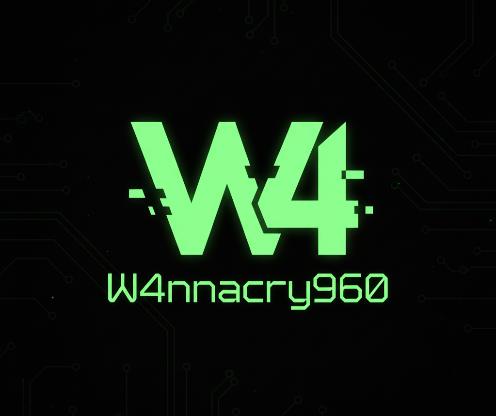

Indonesia Diserang Hacker Miliaran Kali Tiap Hari
Indonesia Diserang Hacker Miliaran Kali Tiap Hari
Indonesia mendapat 1,225 miliar serangan siber setiap harinya. Data tersebut didapat dari K>
Dari miliaran serangan itu, perusahaan keamanan siber, Eset, menyebut bahwa ransomware masih jadi momok bagi keamanan siber berbagai perusahaan di 2018.
Aduan Konten Aduan Konten Situs ini merupakan fasilitas pengaduan konten negatif baik berupa situs/website, URL, akun media sosial, aplikasi mobile, dan software yang memenuhi kriteria sebagai Informasi dan/atau Dokumen Elektronik bermuatan negatif sesuai peraturan perundang-undangan. Home / Berita / sorotan-media / Indonesia Diserang Hacker Miliaran Kali Tiap Hari Kembali ke List Indonesia Diserang Hacker Miliaran Kali Tiap Hari Sorotan Media • Sivitas• 26 Agustus 2020 Dengarkan Berita ini Play Audio Indonesia Diserang Hacker Miliaran Kali Tiap Hari Indonesia mendapat 1,225 miliar serangan siber setiap harinya. Data tersebut didapat dari Kementerian Komunikasi dan Informatika yang diperkuat oleh Kementerian Koordinator Bidang Politik, Hukum, dan Keamanan, seperti tertulis dalam siaran pers dari Eset Indonesia. Dari miliaran serangan itu, perusahaan keamanan siber, Eset, menyebut bahwa ransomware masih jadi momok bagi keamanan siber berbagai perusahaan di 2018. "Malware akan tetap merajai di tahun 2018. Terutama, ransomware akan meningkat karena pembuatnya ngga pernah tertangkap," jelas Yudhi Kukuh, Country Manager Eset Indonesia, saat ditemui CNNIndonesia.com dalam acara Cyber Security Indonesia 2017, di Jakarta Convention Center, Rabu (7/12). Sebelumnya, serangan ransomware ini sempat heboh di Indonesia. Pasalnya, serangan ini telah berimbas pada beberapa rumah sakit. Yudhi lantas memaparkan bahwa perlu solusi keamanan yang diperlukan untuk menghadapi tren serangan malware di 2018. Untuk menangkal serangan, Yudhi menyebutkan bahwa Eset menyediakan solusi keamanan empat lapis. Empat lapis itu adalah untuk mendeteksi serangan, merespon, memprediksi, dan melakukan pencegahan kembalinya serangan serangan siber itu. Deteksi serangan dilakuakn dengan teknologi GreyCortex-Mendle. Teknologi ini dapat mempelajari pola malware. Pola yang sudah dipelajari ini digunakan untuk mengenali jika terjadi serangan yang dilancarkan ke sistem. Respon dari pendeteksian serangan ini adalah sistem mengeluarkan peringatan kepada admin perusahaan. Sehingga, mereka bisa segera melakukan tindakan. Lantas, teknologi threat intelligence digunakan untuk memprediksi serangan. Sebagai sebuah teknologi yang menawarkan "kecerdasan" solusi ini disebut bisa melakukan analisis di dalam jaringan. "Kita punya solusi terintegrasi dalam arti solusi itu tidak hanya mencakup end-point. Kita punya solusi untuk melindungi jaringan dan menganalisis apa yang terjadi di jaringan," kata Yudhi. Analisis ini penting karena bisa melihat ke apa yang salah di dalam sistem ketika serangan terjadi. Teknologi ini juga digunakan untuk memprediksi serangan yang akan terjadi nantinya. Selanjutnya, tindakan pencegahan lalu dilakukan dengan memberikan benteng pada komputer dan server. Sementara bagi pengguna akhir (end user), teknologi ini juga membantu mengamankan data di hard disk laptop mereka jika perangkat dicuri atau hilang. Solusi keamanan itu disediakan dalam solusi Eset Enterprise Security Solutions. (eks) Sumber: https://www.cnnindonesia.com/teknologi/20171208210751-206-261224/indonesia-diserang-hacker-miliaran-kali-tiap-hari/